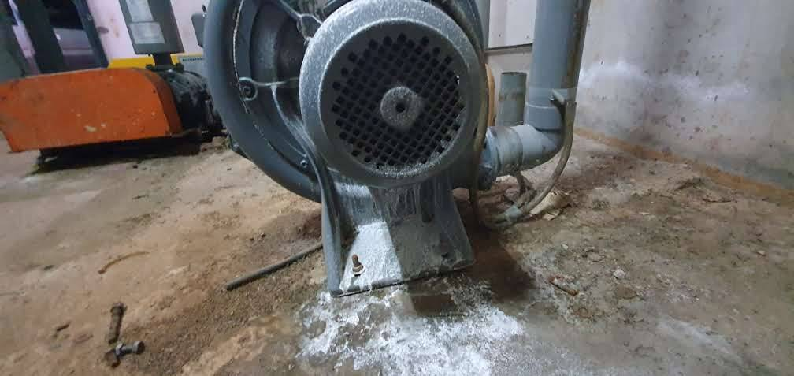

為什麼低頻特別難找？
低頻聲波波長較長，容易繞過局部障礙；如果設備振動又透過樓板、支架或管路進入建築，關窗之後還是可能聽得到。
實務順序：先找聲源 → 再看傳遞路徑 → 最後確認受音點。這三個沒建立起來，先買吸音棉或做隔音牆，很容易花錢做錯地方。
有時候隔壁房間沒事，另一個房間反而更明顯，原因可能是建築結構、反射、共振或設備出口方向造成。
低頻噪音常見於風機、冷氣壓縮機、冷卻水塔、泵浦、空壓機與機房設備。最麻煩的是，它不一定只走空氣，還可能透過基座、管路、樓板與梁柱變成結構傳振。

「聽起來不算很大聲，但就是很煩」是低頻案件常見的描述。找來源時，不要只盯著一台機器，也要看設備和建築怎麼連在一起。
低頻聲波波長較長，容易繞過局部障礙；如果設備振動又透過樓板、支架或管路進入建築，關窗之後還是可能聽得到。
有時候隔壁房間沒事，另一個房間反而更明顯，原因可能是建築結構、反射、共振或設備出口方向造成。
這個主頁負責「低頻噪音與結構傳振」核心主題；支援文章則分別回答住家嗡嗡聲、工廠被鄰居反映、變壓器、機房與陳情處理。
不一定，但持續嗡、轟、悶感，加上關窗後仍明顯或伴隨震感，就值得往低頻與結構傳振方向檢查。
如果問題主要是低頻或結構傳振，薄型吸音材料通常不是主要解法，還是要回到聲源與傳遞路徑。
先記錄發生時間，再做設備啟停、不同位置與不同樓層比對，必要時配合頻譜與振動量測。